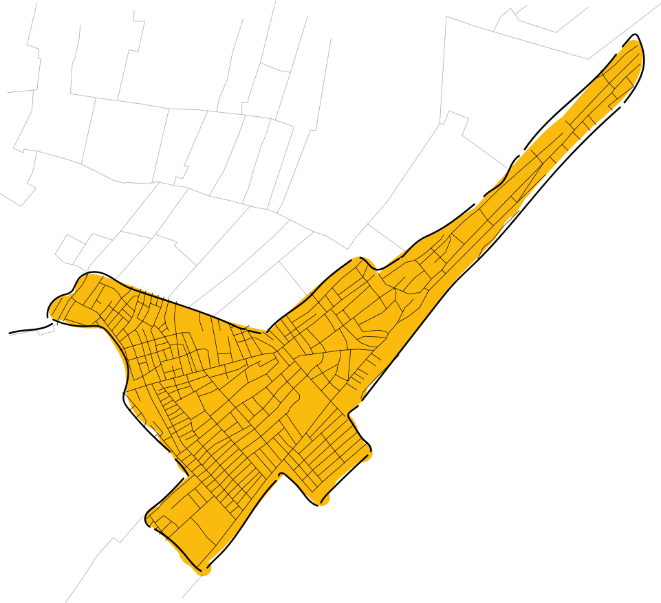
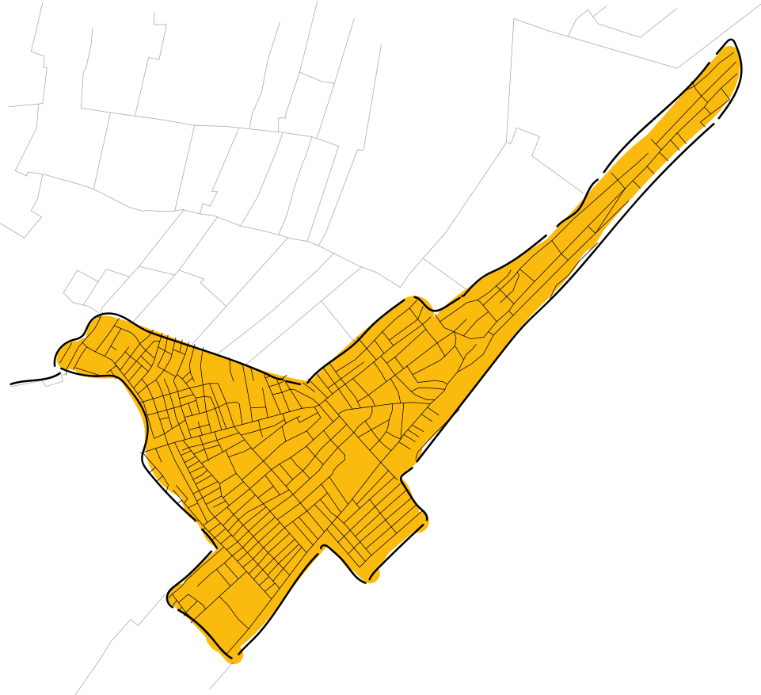

Según el Centro Nacional de Memoria Histórica, en la mayoría de los municipios colombianos se ha vivido el desplazamiento forzado. Por lo cual “No es excesivo caracterizar a Colombia como una Nación desplazada”.
Desplazamiento Forzado
Este especial digital busca sensibilizar sobre la definición y condiciones del Desplazamiento Forzado, de la mano del artista Dayro Carrasquilla. En este, veremos las dinámicas sociales de victimización y revictimización de la población desplazada, especialmente la del barrio Nelson Mandela, en la periferia de Cartagena.
Definición
“Es desplazado toda persona que se ha visto forzada a migrar dentro del territorio nacional abandonando su localidad de residencia o actividades económicas habituales, porque su vida, su integridad física, su seguridad o libertad personales han sido vulneradas o se encuentran directamente amenazadas con ocasión de las violaciones graves y manifiestas a las normas internacionales de derechos humanos, ocurridas con ocasión del conflicto armado interno” (Ley 1448 de 2011)
ObraFragmentos
Tinta sobre piel, acción performática, fotografía digital, 2017
Esta obra del artista Dayro Carrasquilla reúne un conjunto de memorias de victimización y proyectos de vida, de los sobrevivientes del conflicto armado que habitan el barrio Nelson Mandela de Cartagena. Esta se encuentra compuesta por una serie de fotografías donde se observan escritos que, a manera de intervenciones sobre la piel, hablan de las historias de la comunidad mandelara.
Línea del Tiempo
Elaborada a partir de las investigaciones del CNMH: Una nación desplazada, Informe nacional del desplazamiento forzado en Colombia, Bogotá, CNMH, 2015
Haz click en cualquier elemento de la fotografíaEscalamiento del Conflicto
El agravamiento del Conflicto
El gran éxodo
Desplazamiento en medio de los acuerdos de paz
Barrio Nelson Mandela
Colombia
Departamento
de Bolívar
Municipio de
Cartagena
de Indias
Barrio
Nelson Mandela
 

ObraEntre Dientes
Acción performática, fotografía digital, 2014
Las palabras escritas sobre la piel de los habitantes del barrio Nelson Mandela, son producto de la jerga popular costeña, relacionadas con el hecho de denunciar cualquier acto deshumanizante que atropelle la integridad de las personas. Esta obra la componen 21 piezas fotográficas en acrílico con dimensiones de 27 x 40 centímetros, instaladas sobre baldosín dorado adherido a la pared.
Haz clic para ver la obraLa población desplazada en elbarrio Nelson Mandela de Cartagena
En los años noventa, personas desplazadas por la violencia, provenientes de diferentes territorios como los Montes de María, Urabá o el Pacífico chocoano se asentaron en la periferia de Cartagena, donde hoy se ubica el barrio Nelson Mandela. «Donde una buena parte, si no la mayoría, son mestizos, como suelen ser los habitantes de la sabana de Córdoba y Sucre (Secretaría de Planeación Distrital, 2006)*». (*Jaramillo Escobar Lukas, Arias Echavarría Cristina, Jaramillo Morales, Juan Diego, Orden en tiempos paramilitares: violencia, política y lucro en un barrio del caribe colombiano, Desafíos 23-II, 2011, p 127.)
Los pobladores llegaron buscando nuevos comienzos, mientras se producía la oportunidad, en ocasiones, de volver a sus lugares de origen. Como muchos otros barrios en Colombia, este se conformó a finales de los años ochenta y principios de los noventa, en tierras baldías o fincas improductivas.
Hoy, aún hay calles sin pavimentar y viviendas construidas por sus habitantes orgánicamente, con grandes carencias en términos de servicios públicos básicos. Esto, más los diversos factores de marginalidad, han causado revictimizaciones a manos de grupos armados al margen de la ley.
Actualmente, el barrio Nelson Mandela tiene alrededor de 50.000 habitantes, con líderes sociales que han logrado consolidar organizaciones capaces de sacar adelante las necesidades de la comunidad. El artista Dayro Carrasquilla es uno de esos líderes, que a través de su arte promueve una reflexión y gestión social sobre este territorio.
Territorio de PA – ZZZ
Intervención, fotografía digital, 2008
Territorio de pa-zzz es una obra que expresa la necesidad de la comunidad de vivir en paz. En la actualidad, el desplazamiento de la población reproduce elementos de violencia del conflicto armado que los llevaron a instalarse allí, en la periferia de Cartagena.
En el barrio Nelson Mandela son múltiples los hechos de vulneración de DD. HH. en la comunidad, incluidos nuevos desplazamientos, restricción de la movilidad, imposición de reglas o terror, asesinatos y masacres, reclutamiento de jóvenes, daño en propiedad o bienes y extorsión.
El artista local Dayro Carrasquilla manifiesta que entre 1995 y 2010 la comunidad vivió sucesos violentos. La falta del Estado social de derecho, permitieron que diversos grupos armados fueran los actores con poder, tomando la vida de los líderes sociales en sus manos, algunas veces para asesinarlos, otras para desplazarlos.
Haz clic para ver la obraAnónimos
Intervención fotografía digital, 2009
Serie fotográfica de postes de luz que comúnmente son utilizados para ubicar las listas amenazantes, relacionadas con la llamada "limpieza social".
Con la intervención del color en las fotografías se buscó provocar una atmósfera turbia, haciendo alusión al contexto de miedo que se vive en las calles del barrio Nelson Mandela. El montaje es acompañado por una pieza sonora que simula el chillido que se produce en el oído ante la aproximación del silencio absoluto y grabaciones de susurros provenientes de personas que entre confianza, son capaces de referirse a la problemática.
Haz clic aquí para ver la ObraMandeleros
“Ser mandeleros es ser conscientes del poder que tiene la resistencia”
En el marco de la exposición multiplataforma del Museo de Memoria de Colombia «SaNaciones. Caminos de Resistencia», el barrio Nelson Mandela fue partícipe de una acción memorial que buscaba congregar a una comunidad unida por el desplazamiento forzado, que lucha por crear condiciones dignas y justas para sus habitantes, a pesar de múltiples factores sociales victimizantes que los llevan una y otra vez al dolor de la guerra.
Pronto
¡Lanzamiento del video!
- Días
- Horas
- Minutos
- Segundos
Recetario Barrio Nelson Mandela
Para esta misma exposición, el artista Dayro Carrasquilla elaboró el «Recetario Nelson Mandela Resiste en verde» junto a sabedores-sanadores del barrio. Allí están consignados saberes ancestrales de quienes encuentran en la medicina natural la manera de sanar. Estos conocimientos siguen presentes en la comunidad, aún a pesar de las condiciones de desplazamiento que tuvieron que padecer, y hoy son una razón de cohesión social e identidad en torno a los cuales se congregan. Preservarlos hace parte de un camino de lucha, resistencia y reexistencia para los mandeleros.